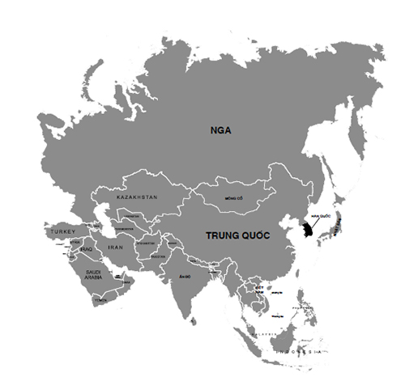

Nguyễn Trọng Phấn
(1910-1996)
Quê: xã Lại Yên, huyện Hoài Đức, TP. Hà Nội.
Trước năm 1945: Viên chức Sở Trước bạ và Trường Viễn Đông Bác Cổ; hội viên Hội Trí Tri và Hội Khai Trí Tiến Đức.
Từ 1945 - 1954: Chánh Văn phòng Đông phương Bác cổ học viện; Chánh Văn phòng Nha Đại học và Tổng Thư ký Ban Sử học - Bộ Giáo dục.
Từ 1954: Giáo viên trường Trung cấp Sư phạm Trung ương; tiếp quản trường Viễn Đông Bác Cổ; sau đó công tác tại Thư viện Khoa học Trung ương - nay là Viện Thông tin KHXH Việt Nam, cho đến khi nghỉ hưu.
Đôi lời về một người ẩn danh (Thay lời tựa sách)
Tôi tốt nghiệp trung học phổ thông rồi theo học Khoa Lịch sử trường Đại học Tổng hợp đúng thời điểm chiến tranh phá hoại lan ra miền Bắc (1964 - 1965). Tốt nghiệp về nhận việc ở Viện Sử học Việt Nam (1969) thì chỉ ít lâu sau lại đi sơ tán cũng vì cuộc chiến tranh phá hoại trở nên ác liệt hơn với những trận rải bom của B52 vào lòng Thủ đô Hà Nội...
Nhắc lại điều đó để tôi giải thích vì sao khi thực sự bước vào cuộc đời nghề nghiệp, mà tôi lại chưa đến khai thác tài liệu tại một trong những thư viện quý nhất khi đó là Viện Thông tin Khoa học xã hội, nơi được thừa kế kho sách vô giá của Trường Viễn Đông Bác Cổ của Pháp tại Hà Nội. Đương nhiên những năm sau này tôi vẫn thường xuyên đến đọc tài liệu tại đây, nhưng thời điểm ấy, tôi không còn được gặp một người là tác giả của cuốn sách mà các bạn cầm trên tay: cụ Nguyễn Trọng Phấn.
Tôi chỉ gặp cụ Phấn khi cụ đã nghỉ hưu. Một ông già khi đó đã ngoài bảy mươi, tóc râu đã bạc, lưng lại còng nhưng lúc nào cũng cắp trên tay những cuốn sách dày mà sau này khi không còn đủ sức cụ cho vào một cái bị xách bên mình. Tôi không hiểu những cuốn sách ấy cụ đang sử dụng dở dang hay mang theo chỉ là một thói quen không bỏ được. Dáng vẻ hiền từ nhưng ít nói. Tôi chỉ được mọi người giới thiệu đó là một cán bộ cũ của thư viện.
Sau này, khi tôi hoạt động nhiều trong công việc của Hội Sử học, tổ chức những sinh hoạt như phổ biến kiến thức, hội thảo kỷ niệm các sự kiện hay nhân vật lịch sử, luôn thấy vị khách lão thành ấy có mặt. Khiêm nhường ngồi ở những hàng ghế sau ít ai để ý. Nhưng với các bậc lão thành, nhất là trong giới nghiên cứu thì mọi người đều tỏ sự kính trọng khi gặp cụ. Dần dà tôi biết nhiều hơn về con người này. Hỏi chuyện cụ, nhất là liên quan đến sách vở cái gì cụ cũng am tường ẩn sau cách nói rất khiêm nhường. Hơn thế thi thoảng cụ còn đến nhà tôi, khi đó sống trong khu phố cổ. Không gặp tôi thì trò chuyện với mẹ tôi, cũng thuộc hạng người cũ của Hà Nội nhưng ít hơn cụ hơn chục tuổi. Câu chuyện giữa họ là gì tôi không rõ, nhưng mẹ tôi luôn tỏ sự tôn trọng và chỉ nói với tôi rằng ngày xưa cụ ấy thuộc hạng người “danh giá”.
Một lần tôi có dịp sang Pháp, cụ Phấn đến nhờ tôi gửi một lá thư cho bà Tiến sĩ Thu Trang - Công Thị Nghĩa, một nhà sử học Việt kiều chuyên viết về những nhân vật lịch sử thời cận đại trong đó có Phan Châu Trinh và Hồ Chí Minh và có sách in ở Việt Nam. Lá thư mà thực ra là một tài liệu viết về tổ chức “Hội Tam điểm” ở Việt Nam mà cụ từng là một người tham dự khá sâu sắc. Cụ viết để cung cấp thêm những hiểu biết về tổ chức này mà Tiến sĩ Thu Trang mới chỉ tiếp cận qua các nguồn tư liệu. Cụ bổ sung nhiều điều và cải chính đôi điều. Tôi biết nội dung bức thư vì chính cụ dặn đây là thư ngỏ nên cứ đọc trước rồi sẽ chuyển sau. Hẳn cụ giữ ý để tôi yên tâm mang giúp thư ra nước ngoài. Nhưng với tôi lá thư khá dài ấy là một nội dung rất bổ ích về một tổ chức hoạt động rất bí mật nhưng lại có không ít tác động vào lịch sử Việt Nam thời cận đại (Pháp thuộc). Chính cụ đã mách bảo tôi rằng trong thư viện và lưu trữ có những tài liệu cho biết Cụ Hồ khi còn trẻ đã từng đến với tổ chức này cả ở Việt Nam và ở Pháp... Sau này có người phát hiện ra tài liệu chứng minh đúng như vậy...
Sau khi tôi chuyển bức thư sang Pháp, bà Tiến sĩ Thu Trang đánh giá rất cao những thông tin cụ Phấn cung cấp và có nhờ tôi chuyển lời cảm ơn và hy vọng có dịp gặp cụ ở Việt Nam. Tôi cũng có ý định khai thác thêm những hiểu biết về cụ, nhưng công việc cứ bẵng đi theo thời gian... cho đến ngày nghe tin cụ mất.
Thú thật, cho đến lúc này, khi bản thảo của cuốn sách mà các bạn đang cầm trên tay được các đồng nghiệp biên soạn gửi tới tôi đọc trước, tôi được biết kỹ hơn những thông tin về nhân thân và các hoạt động nghề nghiệp của cụ Nguyễn Trọng Phấn, tôi mới hiểu hơn cái nhận xét mà mẹ tôi từng nói về cụ, một người danh giá.
Cuốn sách này rất mỏng, lại chỉ là những mẩu tư liệu sưu tầm từ những sách báo của người phương Tây viết về buổi tiếp xúc đầu tiên với đất nước và con người Việt Nam vào thế kỷ XVII. Đó mới chỉ là những bài báo rút ra từ tờ “Thanh Nghị”, sự tập hợp trách nhiệm của những trí thức có tinh thần dân tộc vào thời điểm đang đón chờ cơ hội giành độc lập cho đất nước khi chiến tranh Thế giới lần thứ II tạo ra... Đúng như phụ đề “thu nhặt tài liệu để giúp vào sự giải quyết những vấn đề quan hệ đến cuộc sinh hoạt của dân tộc Việt Nam”, cụ Nguyễn Trọng Phấn và các bạn trí thức “đồng chí” của mình đã làm mọi việc để đặt nền tảng cho một tư duy mới, điều mà ngày nay ta hay dùng, là chuẩn bị tâm thế cho công cuộc hội nhập với thế giới một khi nước nhà giành được độc lập.
Năm Việt Nam giành được độc lập, cụ Nguyễn Trọng Phấn mới 36 tuổi. Cụ Chủ tịch nước Việt Nam độc lập, giữa lúc còn phải “vật lộn” với nạn đói, nạn dốt và ngoại xâm vẫn trân trọng kế thừa cái di sản khoa học của chế độ cũ mà ấn định nhiệm vụ mới của Đông phương Bác cổ Học viện trên cơ sở kế thừa toàn bộ những thành quả nghiên cứu và con người của Trường Viễn Đông Bác cổ của Pháp lập ở Đông Dương. Và cụ Nguyễn Trọng Phấn được đảm nhiệm vai trò Chánh văn phòng và Thư ký của Hội đồng cố vấn Học viện, nơi tập hợp những tên tuổi danh giá như Nguyễn Văn Tố, Nguyễn Văn Huyên, Trần Văn Giáp, Cao Xuân Huy, Nguyễn Đỗ Cung, Đặng Thai Mai, Nguyễn Thiệu Lâu, Đào Duy Anh, Nam Sơn... và cả Ngô Đình Nhu và Cố vấn tối cao Vĩnh Thụy (tức Cựu hoàng Bảo Đại)...
Đọc cuốn sách này hẳn các bạn đọc quan tâm nhiều hơn đến những thông tin về một vấn đề lịch sử được nêu thành tên sách Xã hội Việt Nam từ thế kỷ XVII, nhưng riêng với tôi lại quan tâm nhiều hơn đến thế hệ những người ẩn danh như cụ Nguyễn Trọng Phấn, những người không hiếm sống quanh ta. Hoàn cảnh khiến cụ Nguyễn Trọng Phấn không thành danh như các nhà khoa học lớn, nhưng thế hệ của cụ là thế hệ “làm sống lại những đoạn “Nam sử” mà hiện nay nhiều người sao nhãng” từ cách đây hơn bảy thập kỷ. Những người không thành danh ngoài xã hội nhưng từng danh giá trong tâm khảm những người cùng thời.
Lục tìm trong những tư liệu ngổn ngang của mình, tôi kiếm được một tấm ảnh chụp chung với cụ cũng thấy Trần Quốc Vượng và bạn Lê Cường (cháu nội cụ Lê Hoan), bức ảnh chụp cách nay đã một phần tư thế kỷ nhân một cuộc hội thảo về danh nhân Chu Văn An để in vào cuốn sách này như một kỷ niệm về cụ Nguyễn Trọng Phấn (xin xem trang 188).
Cuối Thu 2015
Dương Trung Quốc